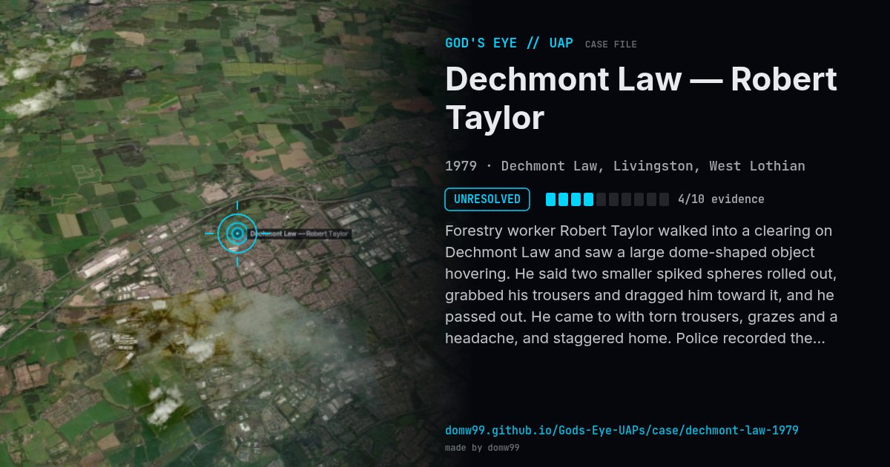

Dechmont Law — Robert Taylor
UNRESOLVED

Forestry worker Robert Taylor walked into a clearing on Dechmont Law and saw a large dome-shaped object hovering. He said two smaller spiked spheres rolled out, grabbed his trousers and dragged him toward it, and he passed out. He came to with torn trousers, grazes and a headache, and staggered home. Police recorded the case as an assault and found marks in the ground. It is often described as the only UFO event police have investigated as a crime. A marker now stands at the site.
What was seen
Shape: Dome-shaped object; two spiked spheres
Witnesses: 1 (forester Robert Taylor)
Duration: About 20 minutes unconscious
Browse
- United Kingdom
- 1970s
- Unresolved
- Close encounters
- Official government documents
- Physical traces
- Documented physiological effects
- Spheres and orbs
- Discs and saucers